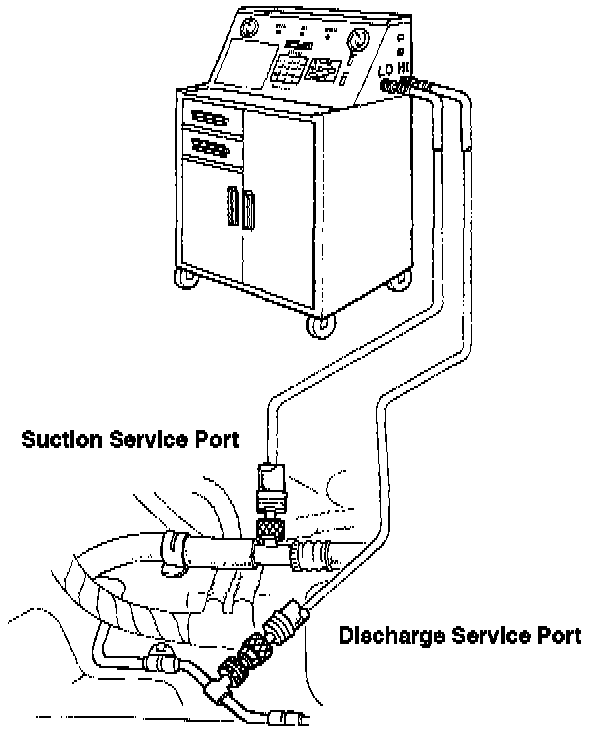

Charging the System
Service Port Locations:

WARNING: Always wear eye protection when charging the system.
The A/C system may be charged with refrigerant by either Vapor or Liquid method:
CAUTION: Do not overcharge the system; the compressor will be damaged.
VAPOR CHARGING, through the low (suction) side:
1. Attach an Air Conditioning Service Station as shown.
2. Open the low gauge valve (adjust it as necessary so pressure does not exceed 281 kPa (40 psi) while charging).
3. Start the engine and switch the air conditioner fan on MAX.
NOTE:
- Run the engine below 1500 rpm.
- If using warm water to speed charging, do not submerge the entire can in the water.
- Keep water temperature below 104°F (40°C).
4. When adding the second or third can, keep the refrigerant can right side-up. Charge the system with 850 - 950 g (30 - 33 oz) of refrigerant.
5. When fully charged, close the gauge valves, then disconnect the hoses from the Service Station.
LIQUID CHARGE through the high pressure (discharge) side:
Following the charging station manufacturer's instructions, charge the system with 850 - 950 g (30 - 33 oz) of refrigerant.
WARNING:
- Do not use disposable cans to charge through the high pressure side of the system. System pressure could transfer into the can causing it to explode. Use only the bulk supply of refrigerant from the charging station.
- Do not run the engine during liquid charge; the compressor will be damaged.
NOTE: After system charging, check the idle boost.